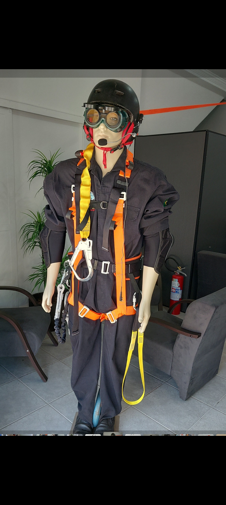
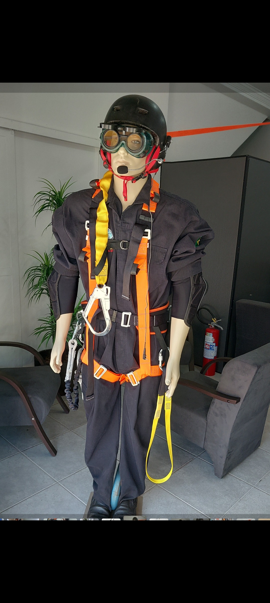

Serviços
Transmissão para o eSocial (S-2210, S-2220, S-2240), elaboração de PGR, PCMSO, LTCAT, PPP e gestão de exames ocupacionais.Endereço: Rua dos Expedicionários, 195 — Ourinhos/SP · Contato: (14) 3322-4141 (WhatsApp)
Estrutura e Fotos
 
